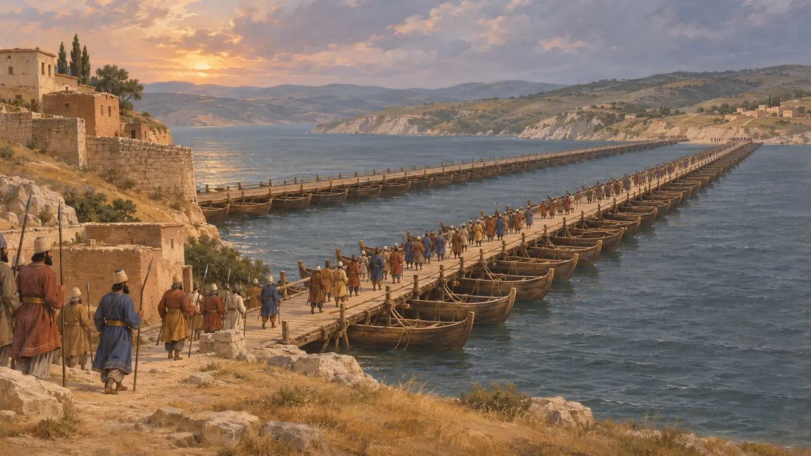
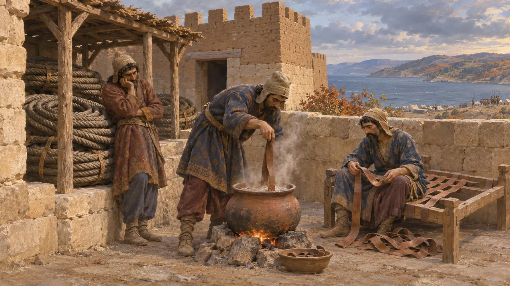
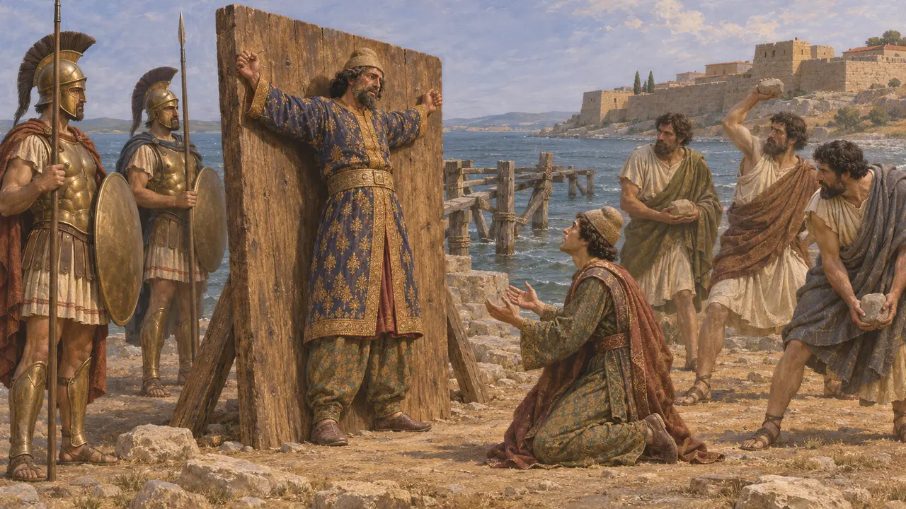
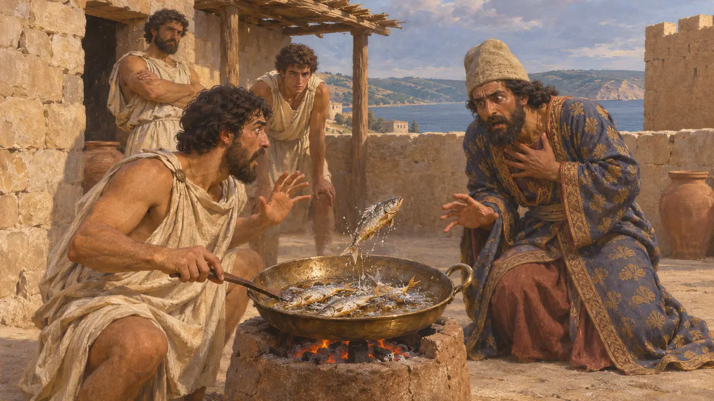
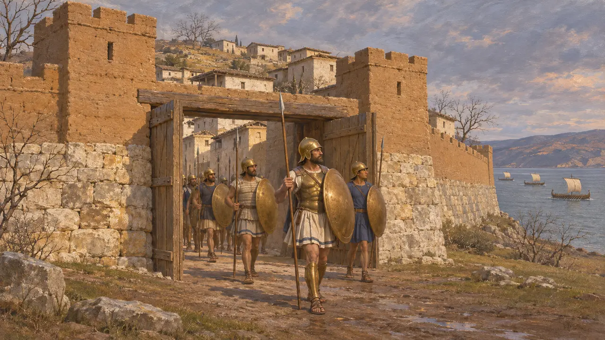

Sestos
Hellespontos kıyısında, MÖ 479-478'de Atina tarafından kuşatılıp alınan kale kenti
Oyunda: Mykale
Sestos, Hellespontos'un Avrupa kıyısında, boğazın karşısında Abydos'a bakan bir Yunan kasabasıydı. Pers egemenliği altında Asya ile Avrupa arasındaki ana geçidi koruyordu. MÖ 479'da Mykale'deki Yunan zaferinden sonra bir Atina donanması kenti kuşatıp ele geçirdi; bu kuşatma, Herodotos'un Tarih'inde anlattığı son olaydır.
Oyunda: Mykale sonsözü Sestos'taki çarpışmayı ve Sestos Evi'ni içerir; oysa gerçek kuşatma, aylarca süren bir Atina ablukasıydı. Kaynaklar Sestos'ta belirli bir evden söz etmez.

İki kıta arasında bir geçit
Antik anlatıHerodotos'a göre Dareios İskit seferinden Sestos üzerinden döndü ve oradan gemiyle Asya'ya geçti. MÖ 480'de Kserkses'in iki tekne köprüsü Abydos'tan Avrupa yakasında Sestos ile Madytos arasındaki bir buruna uzanıyordu. Sestos'u elinde tutan, boğazın ana geçidini denetlerdi.
Herodotus 4.143; Herodotus 7.33-36

Mykale'den sonraki kuşatma
Antik anlatıHerodotos'a göre Yunan donanması Kserkses'in köprülerini yıkmak için Mykale'den yola çıktı, ama köprülerin çoktan ortadan kalktığını gördü. Leotykhides ve Peloponnesoslular evlerine döndü; Ksanthippos komutasındaki Atinalılar ise kalıp, bölgenin en güçlü kalesi olan ve Perslerin toplanıp köprü halatlarını depoladığı Sestos'u kuşattı. Kuşatma sonbahara dek uzadı; sonunda savunucular yiyecek niyetine yataklarının deri kayışlarını kaynatır olmuştu.
Herodotus 9.114-118

Artayktes'in akıbeti
Antik anlatıPers valisi, Herodotos'un yakınlardaki Elaius'ta kahraman Protesilaos'un tapınağını yağmalamakla suçladığı Artayktes'ti. O ve bir başka Pers olan Oiobazos geceleyin kaçtı. Herodotos'a göre Traklar Oiobazos'u yakalayıp tanrılarına kurban etti; Atinalılar ise Artayktes'i yakaladı, köprünün karaya ulaştığı yerde bir tahtaya çiviledi ve oğlunu gözlerinin önünde taşladı.
Herodotus 9.116-120; Herodotus 7.33

Tuzlanmış balık alameti
Geç dönem efsanesiHerodotos'un anlattığına göre bir nöbetçi tuzlu balık pişirirken balıklar tavada sıçrayıp çırpınmıştır. Artayktes bunu, ölü kahraman Protesilaos'un kendisini hâlâ cezalandırabileceğine dair bir işaret saymış ve fidye önermiş, ancak teklifi reddedilmiştir. Hikâye, kutsala saygısızlık ve karşılığı üzerine ahlaki bir öykü olarak kurgulanmıştır.
Herodotus 9.120

Bir savaşın sonu mu, bir imparatorluğun başlangıcı mı
TartışmalıHerodotos, Sestos'un düşüşünü MÖ 479 sonbaharına yerleştirir; Thukydides ise Atinalıların kenti orada kışladıktan sonra aldığını söyler, dolayısıyla kent MÖ 478'in başlarında düşmüş olabilir. Tarihçiler olayın anlamını da tartışır: Herodotos anlatısını burada bitirir, Thukydides ise kuşatmayı Atina'nın Yunanlılara önderlik ettiği ve Ege'de kendi gücünü kurduğu dönemin başlangıcı sayar.
Thucydides 1.89; Herodotus 9.121
Kaynaklar
- Herodotus 9.114-121
- Herodotus 7.33-36
- Thucydides 1.89
- M. A. Flower and J. Marincola, Herodotus: Histories Book IX, 2002
- P. Briant, From Cyrus to Alexander, 2002